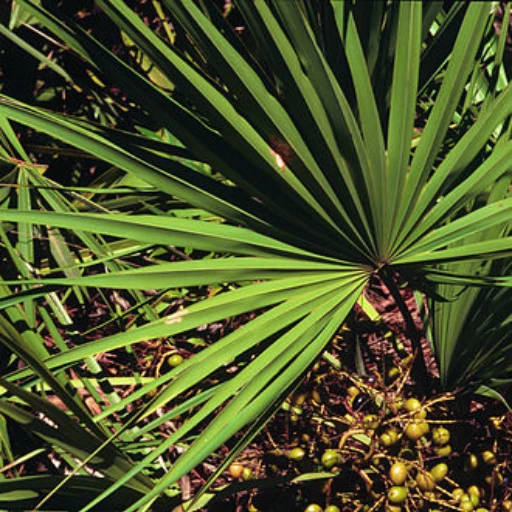

علاج تضخم البروستات الحميد بالأعشاب
نظرة عامة على علاج تضخم البروستات الحميد بالأعشاب
تتكون مستحضرات الأدوية العشبية من الجذور أو البذور أو حبوب اللقاح أو اللحاء أو الفاكهة؛ كثير ما يسأل المرضى الذين يعانون من مشكلة تضخم البروستات الحميد عن العلاج بالأدوية المشتقة من الأعشاب أو بعض المكملات الغذائية و أدوية أخرى، هنالك الكثير من هذه الأصناف التي يتم الترويج لها كعلاج لتضخم البروستات الحميد بالأعشاب عن طريق وسائل التواصل الاجتماعي مع العلم أن العديد من الدراسات العلمية أُجريت لبعض هذه الأصناف و منها ما ثبت وجود فوائد لها و منها ما لم يثبت.
تحتوي بعض الأعشاب على مُرَكّبات قد تساعد في تحسين مشكلة تضخم البروستات؛ تشمل المركبات المحتملة ذات الصلة الفايتوستيرول (ويسمى أيضا الستيرول النباتي) ، سيتوستيرول ، والأحماض الدهنية ، والليكتين. تعمل هذه المركبات على تحسين أعراض تضخم البروستات عن طريق إما أن يكون لها تأثيرات مضادة للالتهابات و مضادة للهرمون الذكري التيستوستيرون؛ أو عن طريق تقليل بروتينات الدم التي ترتبط بالهرمونات الجنسية؛ أو تثبيط إنزيمات مسؤولة عن تكاثر الخلايا البروستاتية. لكن هذا المفعول المفترض لها داخل جسم الإنسان غير مؤكد، والآليات الدقيقة للمستخلصات النباتية في كيفية عملها لا تزال غير واضحة. هذا بالإضافة إلى أنَّ مستخلصات نفس النبات التي تنتجها شركات مختلفة لا تحتوي بالضرورة على نفس التأثيرات البيولوجية أو السريرية؛ لذلك، لا يمكن افتراض أن نفس النبتة لها تأثيرات مستحبة في جميع العلامات التجارية، فطريقة استخلاص المواد الفعالة تختلف من مصنع لآخر، الا اذا تم اثبات الفاعلية لنفس الصنف بدراسات علمية.
في السنوات الأخيرة، ازداد الاهتمام بالطب البديل، بما في ذلك استخدام الأعشاب الطبية كعلاج محتمل لتضخم البروستاتا الحميد. تعتمد هذه العلاجات على خبرة العصور القديمة، وتعتبر خيارًا طبيعيًا للمرضى الذين يرغبون في تجنب الآثار الجانبية المحتملة للأدوية الكيميائية أو الجراحة. سنتناول في هذا المقال مفهوم تضخم البروستاتا الحميد، ونعرض الأساليب التقليدية لعلاجه، مع التركيز على استخدام الأعشاب الطبية ومدى فعاليتها في إدارة أعراض هذه الحالة.
ما هو تضخم البروستاتا الحميد؟ أعراضه وأسبابه
تضخم البروستاتا الحميد هو نمو غير سرطاني لأنسجة البروستاتا. يحدث هذا النمو مع التقدم في السن، وعادة ما يظهر بعد سن الأربعين، ويزداد شيوعًا مع تقدم العمر. تظهر أعراض تضخم البروستاتا الحميد بسبب زيادة حجم البروستاتا والضغط على الإحليل، مما يعيق تدفق البول بشكل طبيعي.
تتمثل الأعراض الشائعة لتضخم البروستاتا الحميد في:
- (التبول المتكرر) ، خاصة أثناء الليل (التبول الليلي).
- صعوبة في بدء التبول.
- ضعف تدفق البول.
- الشعور بعدم تفريغ المثانة بالكامل بعد التبول.
- تقطر البول بعد الانتهاء من التبول.
يمكن أن تكون هذه الأعراض مزعجة وتؤثر على حياة المريض اليومية. وعلى الرغم من أن الحالة ليست خطيرة في حد ذاتها، إلا أنها قد تؤدي إلى مضاعفات مثل التهاب المسالك البولية، وتكون الحصى في المثانة، بالاضافة لاحتمال حدوث حصر البول، وفي الحالات الشديدة، قد يؤدي إلى تلف المثانة أو حتى تلف الكلى.
الطرق التقليدية لعلاج تضخم البروستاتا الحميد
يتوفر العديد من الخيارات لعلاج تضخم البروستاتا الحميد، وتشمل:
أولاً العلاج بالأدوية:
يعتمد على استخدام حاصرات مستقبلات ألفا (Alpha Blockers) التي تساعد في استرخاء العضلات المحيطة بالبروستاتا والمثانة، وكذلك مثبطات إنزيم 5-ألفا (5-Alpha Reductase Inhibitors) التي تقلل من حجم البروستاتا. بالاضافة لأدوية الأخرى
ثانياََ العلاج الجراحي أي العمليات:
في الحالات التي لا تستجيب للعلاج الدوائي أو في حال وجود مضاعفات من تضخم البروستات الحميد، قد يلجأ الأطباء إلى الجراحة لإزالة البروستات أو جزء من البروستاتا.
إلى جانب هذه العلاجات التقليدية، بدأ العديد من المرضى في البحث عن طرق علاج طبيعية مثل الأعشاب الطبية الخاصة بتضخم البروستات الحميد، حيث يرون في هذه العلاجات خيارًا أكثر أمانًا وفعالية على المدى الطويل.
الأعشاب الطبية المستخدمة في علاج تضخم البروستاتا الحميد
تعد الأعشاب الطبية من أقدم العلاجات المستخدمة في الطب التقليدي لعلاج العديد من الحالات، بما في ذلك تضخم البروستاتا الحميد. تعتمد العديد من الثقافات على الأعشاب في علاج اضطرابات البروستاتا، ويعتقد أن بعض الأعشاب تحتوي على مركبات فعالة قد تساعد في تقليل الأعراض المرتبطة بتضخم البروستاتا.
فيما يلي نستعرض بعض الأعشاب الأكثر شيوعًا في علاج تضخم البروستاتا الحميد:
أولاً نبات الساو بالميتو (Saw Palmetto):
السوبالميتو (Palmetto Saw) و هي نبتة البلميط المنشاري (من فصيلة النخيل)؛ أثبتت بعض الدراسات فعالية و أمان استخدام هذه الأدوية في علاج تضخم البروستات الحميد بالأعشاب؛ خاصة الأدوية المصنعة بطريقة استخلاص الهيكسان. لكن بعض الدراسات الأخرى و التي قارنت مفعول هذه الأدوية مع عدم أخذ أدوية نهائياً لم تجد فرقاً في نسب التحسن؛ حيث أن نسبة من المرضى الذين لديهم أعراض من تضخم البروستات يتحسسنون تلقائيا دون علاج.
لكن بما أن طريقة عمل هذه النبتة على البروستات تشبة طريقة عمل علاج البروسكار و هي عن طريق تقليل مفعول الهرمون الذكري التيستوستيرون و تحويله الى الديهدروتستوستيرون فإنها من المفترض أن يكون لها أثر على القدرة الجنسية و فحص مستضاد البروستات؛ لكن الدراسات أثبتت ان هذه الأدوية آمنة على القدرة الجنسية. و قد يكون السبب في التحسن هو عمل هذه النبتة على تقليل الاحتقان و الالتهابات المزمنة. لكن من الأفضل اذا كان هنالك اشتباه بتشخيص سرطان البروستات هو ايقاف هذا العلاج او على الأقل إخبار دكتور المسالك البولية به لأنه قد يؤثر على التشخيص والمتابعة و زيادة الأعراض الجانبية لبعض أنواع العلاجات الأخرى مثل علاج ورم البروستات بالإشعاع أو بالعلاج الهرموني.
ثانياً متحضرات بذر القرع أو اليقطين:
تستخدم بذور وزيت بذور القرع أو اليقطين من قبل الناس منذ سنوات عديدة للتخفيف من الصعوبات المرتبطة بتضخم غدة البروستاتا ومشاكل التبول المتعلقة بتهيج المثانة؛ تنبع ميزة علاج بذور اليقطين من تأثيرها المنشط على المثانة واسترخاء العضلة العاصرة (صمَّام البول) و لا تؤثر على حجم البروستات كما يظن البعض. و ما زال استخدام هذه الأدوية بحاجة لدراسات أكثر.
ثالثاً الخوخ الأفريقي أو البرقوق الأفريقي البيجيوم (Pygeum).
رابعاً القراص (Stinging Nettle).
فعالية الأعشاب في علاج تضخم البروستاتا الحميد:
على الرغم من شيوع استخدام الأعشاب في الطب البديل لعلاج تضخم البروستاتا الحميد، فإن الأدلة العلمية المتعلقة بفعاليتها لا تزال متضاربة. تتفاوت نتائج الدراسات، حيث أظهرت بعض الأبحاث أن بعض الأعشاب مثل الساو بالميتو والبيجيوم يمكن أن تكون فعالة في تقليل الأعراض، بينما لم تجد دراسات أخرى أي فائدة كبيرة. كما و أشارت دراسة تحليلية شاملة إلى أن الساو بالميتو قد يكون له تأثير طفيف في تحسين الأعراض، ولكن ليس بنفس فعالية الأدوية التقليدية مثل حاصرات مستقبلات ألفا .
ملخص علاج تضخم البروستات الحميد بالأعشاب
استخدام المستحضرات العشبية النباتية قد يكون جاذباً لبعض المرضى لكن علاج تضخم البروستات الحميد بالأعشاب و مستحضراتها ما زال يفتقر إلى كيفية الإعطاء و الجرعات و المدة الزمنية للعلاج و يفتقر لإمكانية التنبؤ بالفوائد أو المشاكل من استخدامها؛ لذلك لم توصي أغلب جمعيات المسالك البولية في العالم باستخدامها بانتظام.
مراجع علاج تضخم البروستات الحميد بالأعشاب:
- Madersbacher S, Berger I, Ponholzer A, Marszalek M. Plant extracts: sense or nonsense?. Curr Opin Urol. 2008;18(1):16-20. doi:10.1097/MOU.0b013e3282f0d5c8.
- Buck AC. Is there a scientific basis for the therapeutic effects of serenoa repens in benign prostatic hyperplasia? Mechanisms of action. J Urol. 2004;172(5 Pt 1):1792-1799. doi:10.1097/01.ju.0000140503.11467.8e.
- Levin RM, Das AK. A scientific basis for the therapeutic effects of Pygeum africanum and Serenoa repens. Urol Res. 2000;28(3):201-209. doi:10.1007/s002409900098.
- Habib FK, Wyllie MG. Not all brands are created equal: a comparison of selected components of different brands of Serenoa repens extract. Prostate Cancer Prostatic Dis. 2004;7(3):195-200. doi:10.1038/sj.pcan.4500746.
- Scaglione F, Lucini V, Pannacci M, Caronno A, Leone C. Comparison of the potency of different brands of Serenoa repens extract on 5alpha-reductase types I and II in prostatic co-cultured epithelial and fibroblast cells. Pharmacology. 2008;82(4):270-275. doi:10.1159/000161128.
- De Monte C, Carradori S, Granese A, Di Pierro GB, Leonardo C, De Nunzio C. Modern extraction techniques and their impact on the pharmacological profile of Serenoa repens extracts for the treatment of lower urinary tract symptoms. BMC Urol. 2014;14:63. Published 2014 Aug 11. doi:10.1186/1471-2490-14-63.
- EMA. European Union monographs for Herbal Medicinal Products.
- Committee on Herbal Medicinal Products. European Union herbal monograph on Serenoa repens (W. Bartram) Small, fructus. EMA/HMPC/280079/2013, 2015.
- Committee on Herbal Medicinal Products. Community herbal monograph on Cucurbita pepo L., semen. EMA/HMPC/136024/2010, 2012.
- Committee on Herbal Medicinal Products. European Union herbal monograph on Prunus africana (Hook f.) Kalkm., cortex. EMA/HMPC/680626/2013, 2016.
- Committee on Herbal Medicinal Products. Community herbal monograph on Urtica dioica L., Urtica urens L., their hybrids or their mixtures, radix. EMA/HMPC/461160/2008, 2012.
- Committee on Herbal Medicinal Products. European Union herbal monograph on Epilobium angustifolium L. and/or Epilobium parviflorum Schreb., herba EMA/HMPC/712511/2014, 2015.
- Tacklind J, MacDonald R, Rutks I, Wilt TJ. Serenoa repens for benign prostatic hyperplasia. Cochrane Database Syst Rev. 2009;(2):CD001423. Published 2009 Apr 15. doi:10.1002/14651858.CD001423.pub2.
- Novara G, Giannarini G, Alcaraz A, et al. Efficacy and Safety of Hexanic Lipidosterolic Extract of Serenoa repens (Permixon) in the Treatment of Lower Urinary Tract Symptoms Due to Benign Prostatic Hyperplasia: Systematic Review and Meta-analysis of Randomized Controlled Trials. Eur Urol Focus. 2016;2(5):553-561. doi:10.1016/j.euf.2016.04.002.
- Vela-Navarrete R, Alcaraz A, Rodríguez-Antolín A, et al. Efficacy and safety of a hexanic extract of Serenoa repens (Permixon® ) for the treatment of lower urinary tract symptoms associated with benign prostatic hyperplasia (LUTS/BPH): systematic review and meta-analysis of randomised controlled trials and observational studies. BJU Int. 2018;122(6):1049-1065. doi:10.1111/bju.14362.
- Russo GI, Scandura C, Di Mauro M, et al. Clinical Efficacy of Serenoa repens Versus Placebo Versus Alpha-blockers for the Treatment of Lower Urinary Tract Symptoms/Benign Prostatic Enlargement: A Systematic Review and Network Meta-analysis of Randomized Placebo-controlled Clinical Trials. Eur Urol Focus. 2021;7(2):420-431. doi:10.1016/j.euf.2020.01.002.
- Boeri L, Capogrosso P, Ventimiglia E, et al. Clinically Meaningful Improvements in LUTS/BPH Severity in Men Treated with Silodosin Plus Hexanic Extract of Serenoa Repens or Silodosin Alone. Sci Rep. 2017;7(1):15179. Published 2017 Nov 9. doi:10.1038/s41598-017-15435-0.